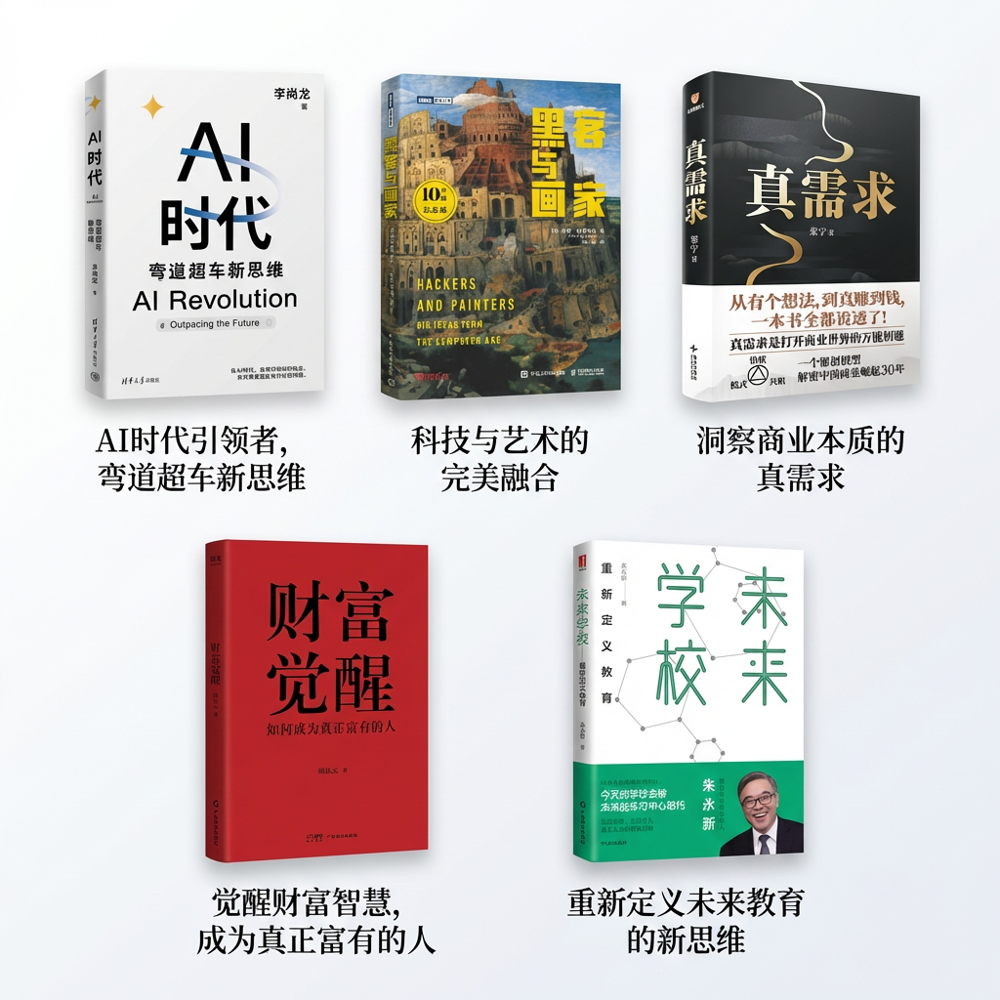

Recent Reading

2025年读书一段话总结：在新技术带来的基础设施变革情况下，建立《AI时代—弯道超车新思维》，用工具提出一个好问题，实现人机协同，提升自己的生产力。摒弃过分功利的思考模式，秉持《黑客与画家》共同的精神——探索创新、同时保持对美感的执着。在AI工具加持，具有创新和美感思维之后，发现《真需求》，家人有真需求，恋人有真需求，客户有真需求，市场有真需求，提供价值、引领共识、打造自己的模式，在竞技台上活下去！人永远赚不到认知以外的钱，怎么能搞到钱？怎么能让《财富觉醒》？关注发展趋势，发掘维护资源，提升自己的贵人缘或许是一条弯道超车的道路。最后，教育是一代又一代人的话题，关乎自己，关乎儿女，关乎新一代人的成长体系。工业革命的那一套定制化教育体系或许在AI时代已不再试用。《未来学校—重新定义教育》或许能让人跳出认知泥潭，以后更好地教育后代。
下一年一定要看！
《鬼谷子》：说服一位君主做出决策，《真需求》书里对《鬼谷子》各篇做了核心提炼，并回归到关键步骤，发现真需求，帝王也拍手叫好之后，迟迟不做决定是没理清利益相关人地图。在职场，在生活中，每件事都有诸多利益相关方，帮上位者画清利益相关方地图，是成事的关键。该说的都说了，该做的都做了，你也答应了，最后你没行动，问题就在于此。 《马斯克传》：年初看了马斯克的纪录片，一个怪人，人多多少少年轻的时候都有点奇思妙想，都有点叛逆，为什么有的人痴迷于将人类送上火星，并取得成果。现在智能手机里的芯片性能和最早发射卫星的芯片性能差不多，为什么我们却用它来刷短视频。在chaos中保持专注，保持初心，是应该和这位大师学习的。